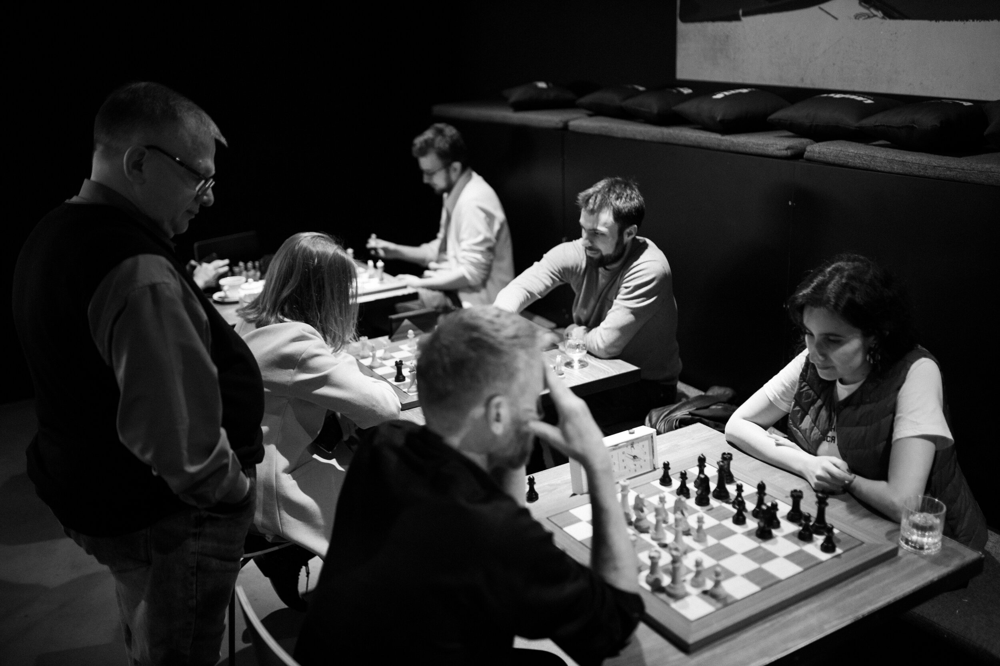
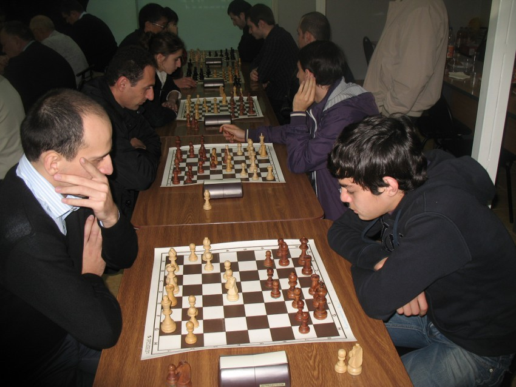

Üye Görüşleri
"Bu kulübe katıldıktan sonra satranç oyunumda büyük ilerleme kaydettim. Eğitmenler çok profesyonel ve sabırlı. Herkese tavsiye ederim."

Ahmet Yılmaz
2 Yıllık Üye
"Kulüpteki atmosfer inanılmaz. Hem yeni arkadaşlar edinebiliyor hem de satranç seviyemi yükseltebiliyorum. Tesisler ve ekipmanlar birinci sınıf."

Ayşe Kaya
1.5 Yıllık Üye
"Çocuğum için daha iyi bir satranç ortamı düşünemezdim. Eğitmenler çok ilgili ve kulüpteki diğer oyuncular hep yardımcı oluyor."

Mehmet Demir
1 Yıllık Üye